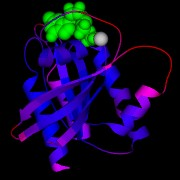
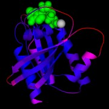

MolScript is a program for creating schematic or detailed molecular
graphics images from molecular 3D coordinates, usually, but not
exclusively, protein structures. The user supplies an input file (the
script) which specifies the coordinate file, what objects to render
and the exact appearance of the objects through the graphics state
parameters. There is a helper program
MolAuto, which produces a good
first-approximation input file from a coordinate file.
 
